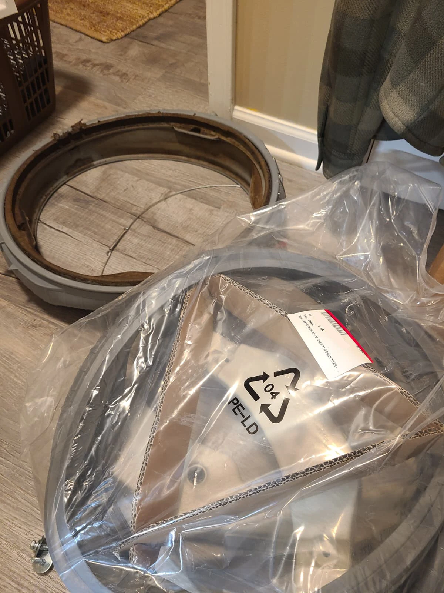
Replacing a Worn Door Gasket on an Otherwise Working Washer
This Kenmore Elite washer repair in Westfield, Indiana focused on the condition of the door boot, also called the door gasket or door seal. The homeowner reported that the old rubber had become dirty, rough and stiff, with mold buildup, and requested a new gasket.
The washer's other functions were working well. This was not a visit for a reported initial leak or a failed wash cycle. We replaced the gasket, reassembled the appliance and checked it in operation. No leaks were found during the final test.
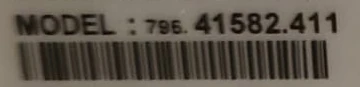
The Actual Washer Model: Kenmore Elite 796.41582.411
The model label on this washer identifies it as Kenmore Elite 796.41582.411. This is a crop of the original service photograph, not recreated label text. The serial-number area has been left out.
The complete model number matters when identifying a replacement gasket and its connection layout. The photographs throughout this story document this specific washer and the work performed at the Westfield home.
Before and After: The Door Seal
The first photograph shows the old gasket with extensive staining and buildup in its folds. The second shows the replacement fitted around the opening after reassembly. The homeowner chose replacement because of the old gasket's condition; the repair was not presented as a solution to an unrelated mechanical fault.
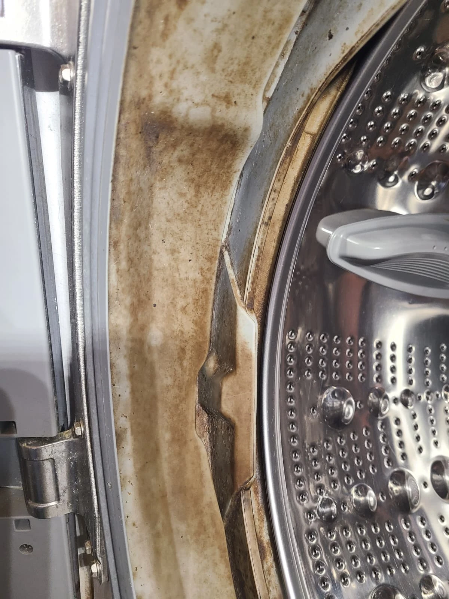
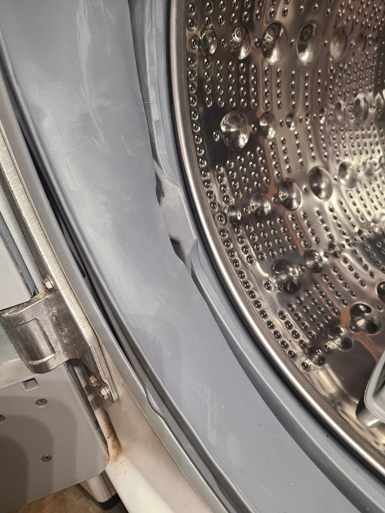
Opening the Cabinet for Access
We removed the panels needed to reach the door boot and its connections. With the front exposed, the counterweights restricted working access around the gasket. They were removed for this replacement and installed again during reassembly.
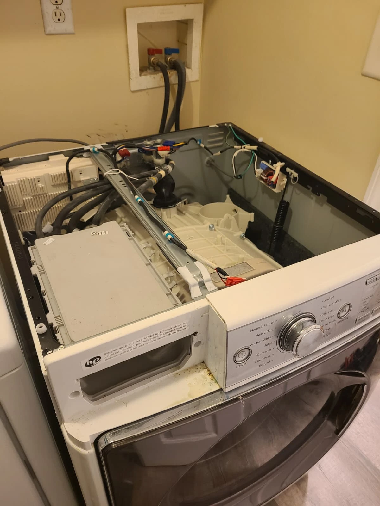
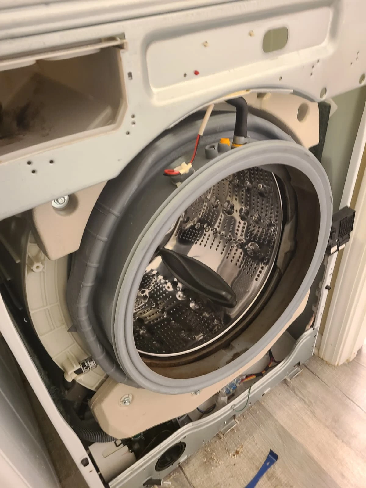
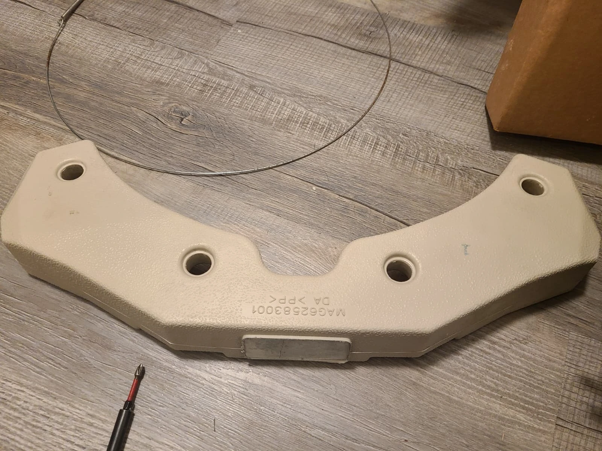
Removing the Obstructing Counterweights
The photograph shows a removed front counterweight and gasket retaining ring. Removing the counterweights provided access to release the old boot and work around its mounting edge.
The counterweights were removed for access, not because they were diagnosed as defective. They remained part of the washer and were reinstalled after the new boot was fitted.
Cleaning the Mounting Lip Before Installation
Removing the old gasket exposed deposits around the tub opening. We cleaned this accessible mounting area before installing the replacement. These close-ups show the same stage of the job before and after cleaning; this was mounting-area cleaning, not a claim that the entire outer tub had been dismantled and cleaned.
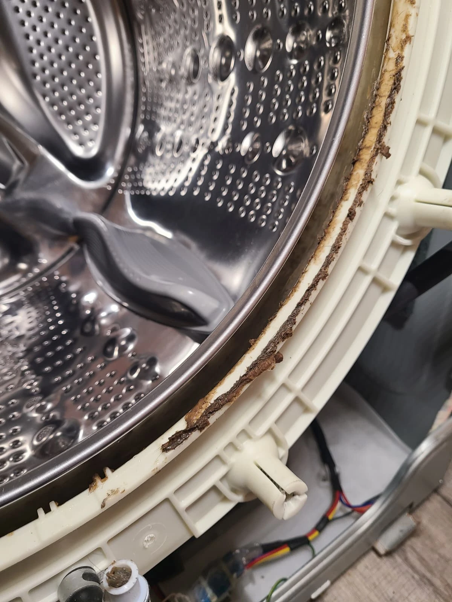
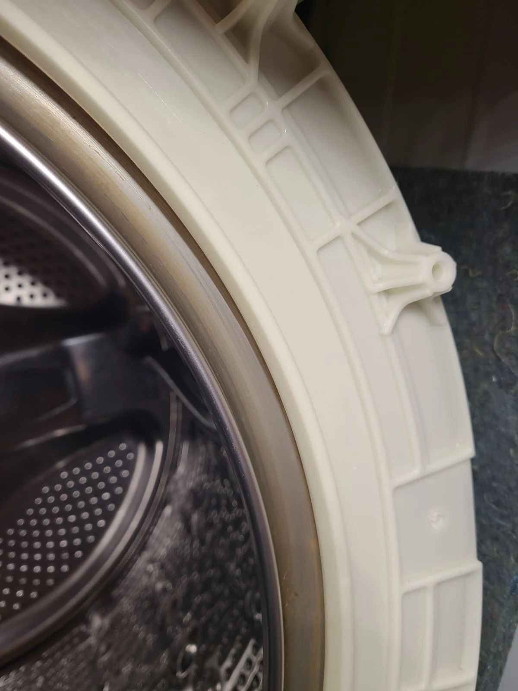
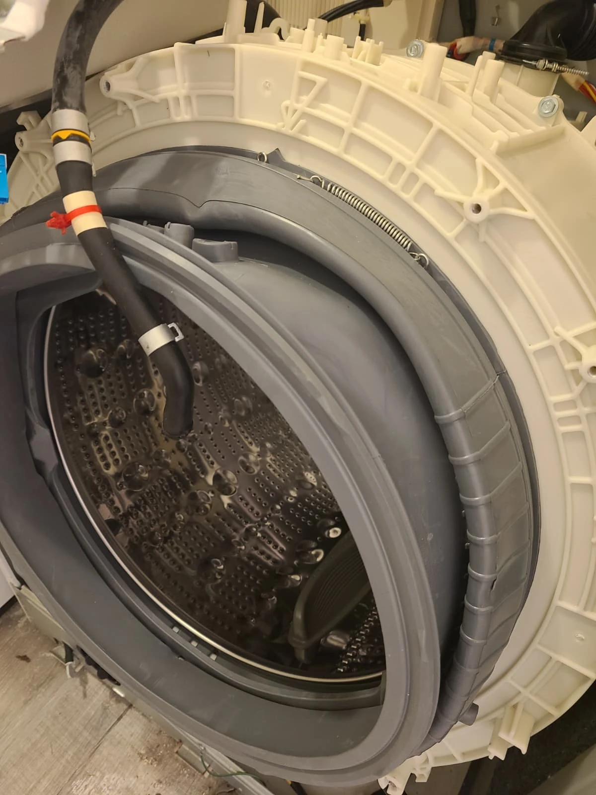
Fitting the New Door Boot
The replacement gasket was fitted around the tub opening. Its connections were positioned for reassembly, and the inner retaining ring was installed to secure the boot.
The new gasket replaced the old rubber rather than concealing or treating its stains. The following photographs document the retaining spring and one of the reconnected hoses before the cabinet was closed.
Securing the Gasket and Reconnecting the Hose
The inner retaining ring and hose connections were restored as part of the installation. The lower hose is shown with its clamps back in place. These are service-record photographs of this repair, not a complete disassembly guide for other washer models.
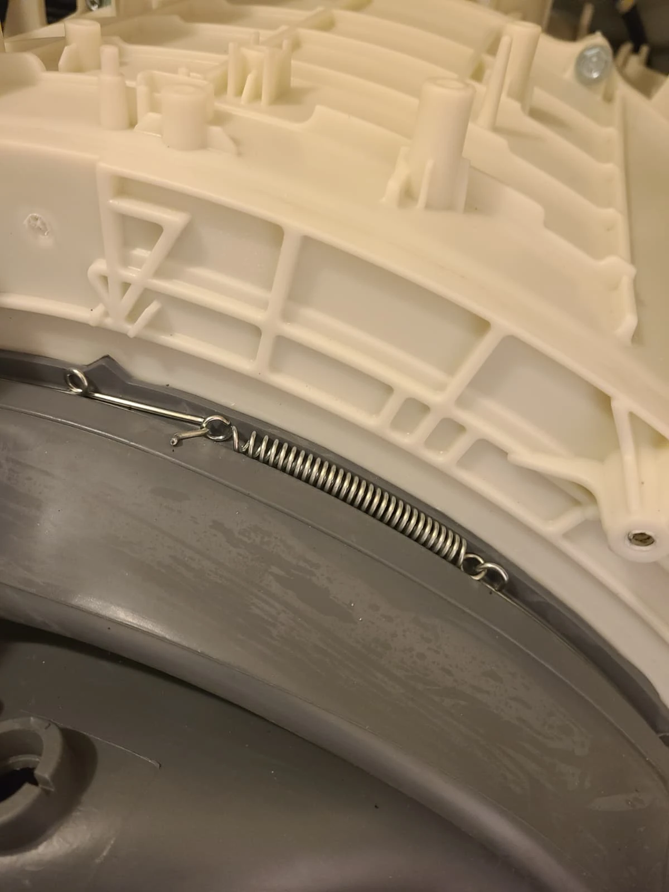
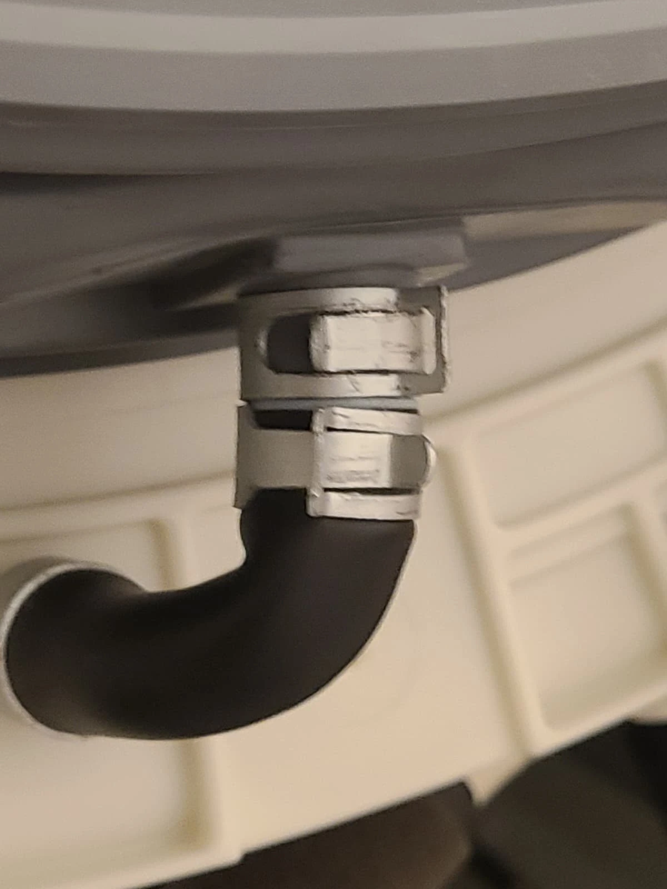
Reinstalling the Counterweights and Front Panel
With the replacement boot secured, we reassembled the washer in reverse order, including the counterweights, connections, panels and outer gasket attachment. The photographs show the new boot with the counterweight reinstalled and the finished door opening after the front panel was restored.
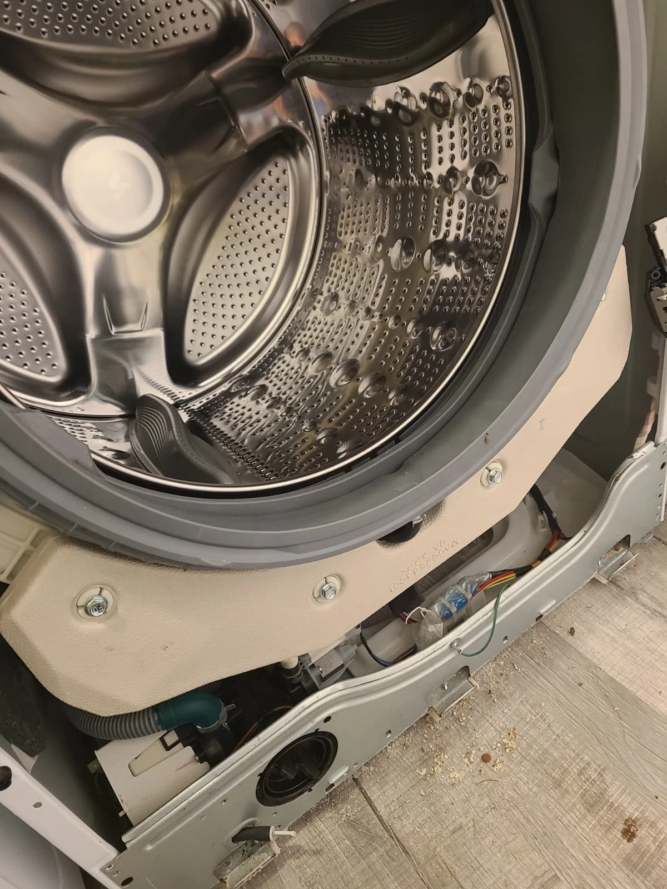
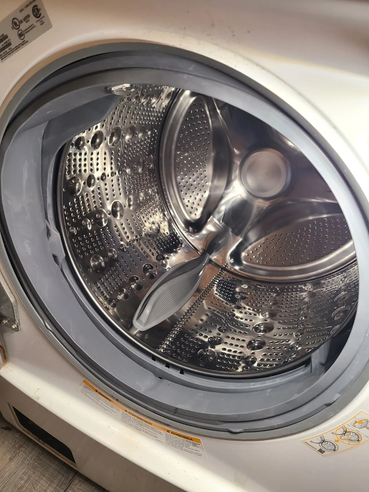
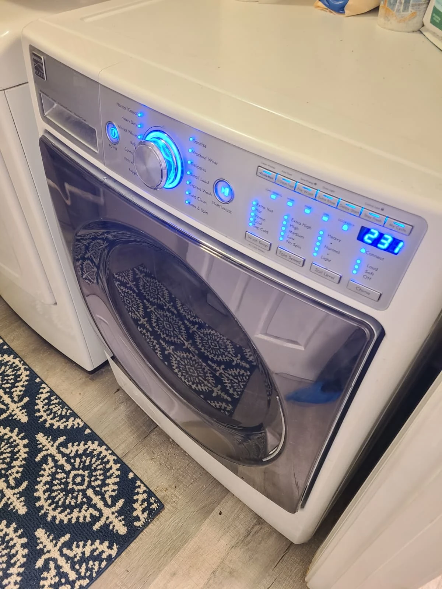
Final Test: The New Gasket Held Water
After reassembly, we tested the washer. The new door gasket held water, and no leaks were observed. The washer was returned to the homeowner with the requested replacement completed.
The customer was satisfied with the result. This visit addressed the gasket condition while retaining the other components that were already working well.
Questions About This Gasket Replacement
Was this washer leaking before service?
A leak was not the reported reason for the visit. The customer requested replacement of a dirty, stiff, moldy gasket. The leak check was performed after installation.
Was the old gasket cleaned or replaced?
It was replaced with a new gasket. We also cleaned the accessible mounting lip exposed by removing the old boot.
Why were the counterweights removed?
They restricted access to the gasket on this washer. They were removed for the job and reinstalled during reassembly, not replaced as failed parts.
Did the washer need other repairs?
The customer reported that its other functions were working well. This service record documents the requested door gasket replacement and the successful post-repair leak check.
Washer Door Gasket Replacement in Westfield, Indiana
For a damaged or deteriorated washer door seal, contact Alex Appliance Repair for washer repair in Westfield. Share the full model number, a photograph of the gasket and a description of the concern so we can discuss the service request.
Explore our washer repair services, Westfield service area and more repair stories with original service photographs.
Alex Appliance Repair is an independent appliance repair service operated by Aksenov LLC. Call (463) 248-8429 to discuss your washer.
Book washer repair in Westfield